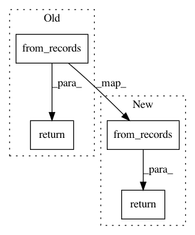

76f8178b28b6224933946650115459fd3c416357,cnvlib/tabio/textcoord.py,,read_text,#Any#,11
Before Change
parse_line = report_bad_line(from_label)
with as_handle(infile, "rU") as handle:
rows = [parse_line(line) for line in handle]
return pd.DataFrame.from_records(rows, columns=["chromosome", "start",
"end", "gene"])
Region = collections.namedtuple("Region", "chromosome start end gene")
After Change
parse_line = report_bad_line(from_label)
with as_handle(infile, "rU") as handle:
rows = [parse_line(line) for line in handle]
table = pd.DataFrame.from_records(rows, columns=["chromosome", "start",
"end", "gene"])
table["gene"] = table["gene"].replace("", "-")
return table
def write_text(dframe):
Text coordinate format: "chr:start-end", one per line.
In pattern: SUPERPATTERN
Frequency: 3
Non-data size: 4
Instances
Project Name: etal/cnvkit
Commit Name: 76f8178b28b6224933946650115459fd3c416357
Time: 2017-02-10
Author: eric.talevich@gmail.com
File Name: cnvlib/tabio/textcoord.py
Class Name:
Method Name: read_text
Project Name: biocore/scikit-bio
Commit Name: 0d7505503ea86a9e3604531025c843622ca6845a
Time: 2014-05-29
Author: jai.rideout@gmail.com
File Name: skbio/math/stats/distance/base.py
Class Name:
Method Name: bioenv
Project Name: biocore/scikit-bio
Commit Name: b0d9f5c388202b9114f352fbbef23225fcb91f86
Time: 2014-05-29
Author: jai.rideout@gmail.com
File Name: skbio/math/stats/distance/base.py
Class Name:
Method Name: bioenv